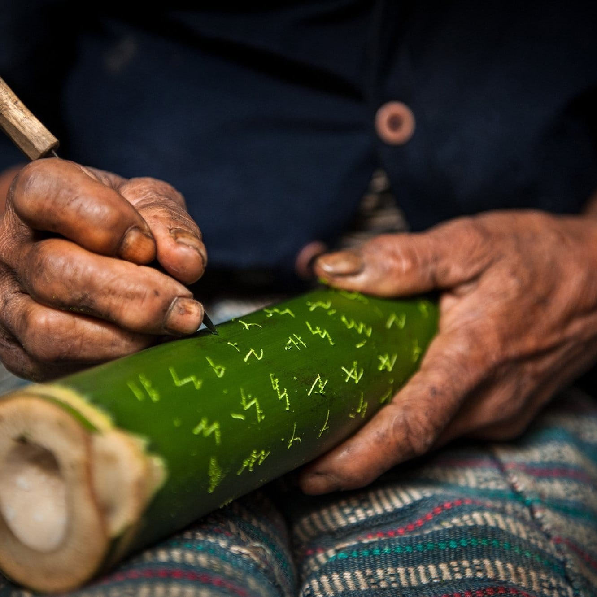
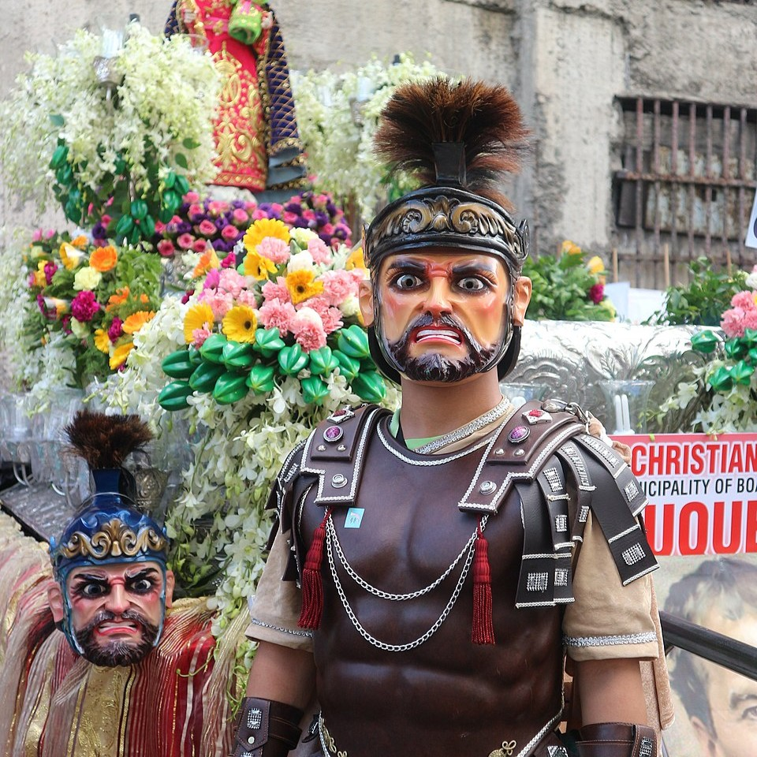
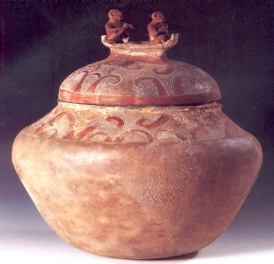
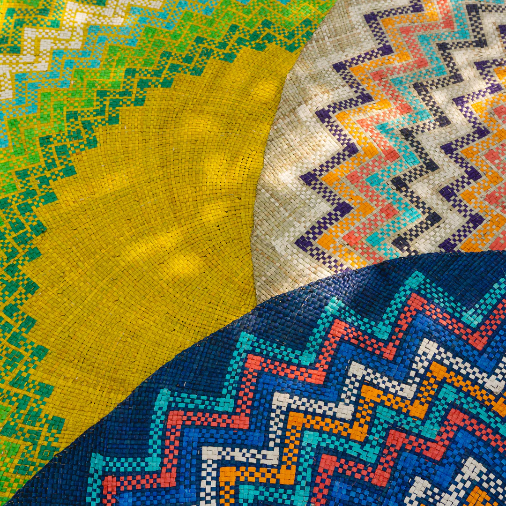

This section explores the famous art objects of Central Philippines and how they use specific design elements to create meaning.
Focus: Identification, Elements, and Principles of Art

Mindoro is known for the Hanunuo-Mangyan script, a pre-colonial writing system still preserved by the Mangyan people. It is also recognized for its intricate basketry and weaving made from natural materials found in the environment. These traditions reflect the rich cultural heritage and craftsmanship of the Mangyan communities.

Marinduque is known for the Moriones Masks, which are used during the Moriones Festival. These masks feature bold colors and exaggerated facial expressions that create a fierce and dramatic appearance. They reflect the province’s strong religious traditions and vibrant cultural celebrations.

An ancient burial jar considered a masterpiece of early Filipino pottery. Its lid features a carved boat with curved lines representing the journey of the soul to the afterlife. This artifact reflects the deep spiritual beliefs and advanced craftsmanship of early Filipinos.

Samar is known for the colorful Basey mats (banig), handwoven using pandan leaves by skilled local weavers. These mats feature intricate geometric patterns and floral designs that showcase creativity and precision. They reflect the rich weaving tradition and cultural identity of the people of Basey.